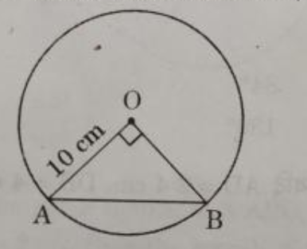
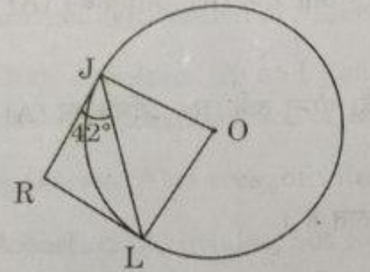
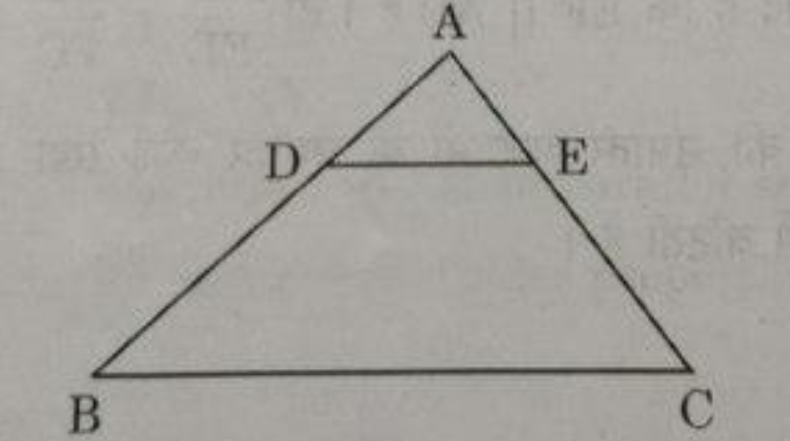
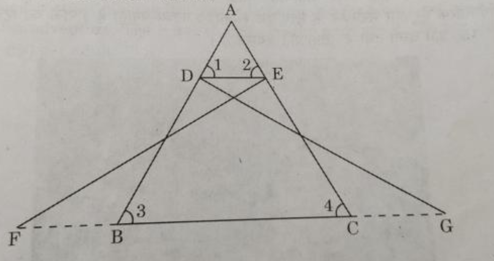
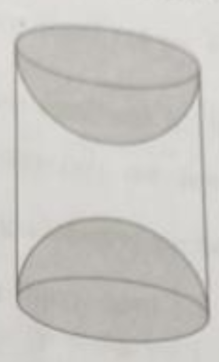
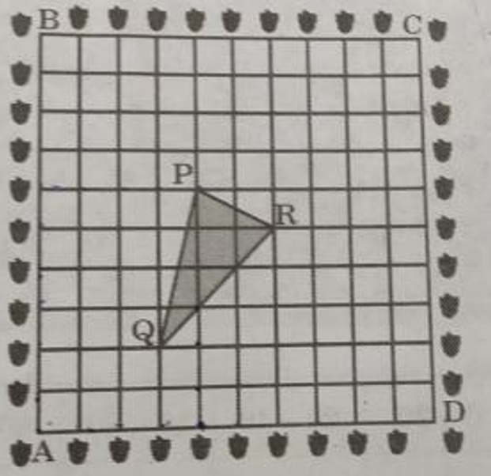

This question paper contains 38 questions. All questions are compulsory.
Question paper is divided into FIVE sections - Section A, B, C, D and E.
In Section A, question number 1 to 18 are multiple choice questions (MCQs) and question number 19
and 20 are Assertion-Reason type questions of 1 mark each.
In Section B, question number 21 to 25 are very short answer (VSA) type questions of 2 marks each.
In Section C, question number 26 to 31 are short answer (SA) type questions carrying 3 marks each.
In Section D, question number 32 to 35 are long answer (LA) type questions carrying 5 marks each.
In Section E, question number 36 to 38 are case based questions of assessment of competencies
carrying 4 marks each. Each case study is provided in 2 marks question in each case study.
There is no overall choice. However, an internal choice has been provided in 2 questions in Section
B, 2 questions in Section C, 2 questions in Section D and 3 questions in Section E.
Draw neat figures wherever required. Take π = 22/7 wherever required if not stated.
Use of calculator is not allowed.
SECTION - A
The next (4th) term of the A.P. √18, √50, √98, ...is:
√128
√140
√162
√200
If x/3 = 2. y / 3 = 2 cos A, then the value of x2 + y2 is:
36
6
9
18
If 4 sec θ - 5 = 0, then the value of cot θ is:
3/4
4/5
5/3
4/3
Which out of the follwoing type of straight lines will be represented by the system of equations 3x + 4y
= 5 and 6x + 8y = 7?
Parallel
Interseting
Coincident
Perpendicular to each other
The Ratio of the sum and product of the roots of the quadratic equations 5x2 - 6x + 21 = 0
is:
5 : 21
2 : 7
21 : 5
7 : 2
For the data 2,9, x + 6x 2x + 3,5,10,5; if the mean is 7, then the value of x is:
9
6
5
3
One ticket is drawn at random from a bag containing tickets numbered 1 to 40. The probability that hthe
selected ticket has a number which is a multiple of 7 is:
1/7
1/8
1/5
7/40
The perimeer of the sector for a circle of radius 21 cm which subtends an angle of 60deg at the center
of
cricle, is:
22cm
42cm
64cm
462cm
The length of an arc of a circle with radius 12 cm is 10π The angle subtended by the arc at the centre
of the circle, is:
120°
6°
75°
150°
The greatest number which divides 281 and 1249, leaving remainder 5 and 7 respectively, is:
23
276
138
69
The number of terms in the A.P. 3, 6, 9, 12, ..., 111 is:
36
40
37
30
A chord of a circle of radius 10 cm subtends a right angle at its center. The length of the chord (in
cm):

5√2
10√2
5/√2
5
The LCM of three numbers 28, 44, 132 is:
258
231
462
924
If the product of two co-prime numbers is 553, then their HCF is:
1
553
7
79
If α and β are the zeroes of the polynomial p(x) = kx² – 30x + 45k and α + β = αβ, then the value of k
is:
–2/3
–3/2
3/2
2/3
In the given fiure, RJ and RL are two tangents to the circle. If ∠RJL = 42°, then the measure of ∠JOL
is:

42°
84°
86°
138°
In the given figure, in ∆ABC, DE || BC. If AD = 2⋅4 cm, DB = 4 cm and AE = 2 cm, then the length of AC
is:

10/3 cm
3/10 cm
16/3 cm
1⋅2 cm
If a vertical pole of length 7.5 m casts a shadow 5 m long on the ground and at the same time, a tower
casts a shadow 24 m long, then the height of the tower is:
20 m
40 m
60 m
36 m
Questions number 19 and 20 are Assertion and Reason based questions. Two statements are given, one
labelled as Assertion (A) and the other is labelled as Reason (R). Select the correct answer to these
questions from the codes (A), (B), (C) and (D) as given below.
(A) Both Assertion (A) and Reason (R) are true and Reason (R) is the correct explanation of Assertion
(A).
(B) Both Assertion (A) and Reason (R) are true, but Reason (R) is not the correct explanation of
Assertion (A).
(C) Assertion (A) is true, but Reason (R) is false.
(D) Assertion (A) is false, but Reason (R) is true.
Assertion (A): ABCD is a trapezium with DC || AB. E and F are points on AD and BC respectively, such
that EF || AB. Then
AE/ED = BF/FC
Reason (R): Any line parallel to parallel sides of a trapezium divides the non-parallel sides
proportionally.
Assertion (A): Degree of a zero polynomial is not defined.
Reason (R): Degree of a non-zero constant polynomial is 0.
section - B
If two tangents inclined at an angle of 60° are drawn to a of radius 3 cm, then find the length of
each tangent.
OR
Prove that the tangents drawn at the ends of a diameter of a circle are parallel.
Evaluate:
2tan30°⋅ sec 60°⋅ tan 45°
____________________
1 - sin2 60°
If α, β are zeroes of the polynomial p(x) = 5x² – 6x + 1, then find the value of α + β + αβ.
(a) Find the ratio in which the point P(–4, 6) divides the line segment joining the points A(–6, 10) and
B(3, –8).
OR
(b) Prove that the points (3, 0), (6, 4) and (–1, 3) are the vertices of an isosceles triangle.
A carton consists of 60 shirts of which 48 are good, 8 have major defects and 4 have minor defects.
Nigam, a trader, will accept the shirts which are good but Anmol, another trader, will only reject the
shirts which have major defects. One shirt is drawn at random from the carton. Find the probability that
it is acceptable to Anmol.
section - C
(a) Prove that √3 is an irrational number.
OR
(b) Prove that (√2 + √3)² is an irrational number, given that √6 is an irrational number.
Prove that the parallelogram circumscribing a circle is a rhombus.
Prove that:
tan A cos A
________+___________ = 1 + sec A csc A
1 - cot A 1 - tan A
Three unbiased coins are tossed simultaneously. Find the probability of getting:
(i) at least one head.
(ii) exactly one tail.
(iii) two heads and one tail.
An arc of a cricle of radius 10 cm subtends a right angle at the centre of the circle. Find the area of
the corresponding major sector. (Use π = 3.14)
(a) Find the value of k for which the quadratic equation
(k+1)x2-6(k+1)x+3(k+9) = 0, k ≠ -1 has real and equl roots.
(b) The age of a man is twice the square of the age of his son. Eight years hence, the age of the man
will be 4 years more than three times the age of his son. Find their present ages.
From a point on a bridge across the river, the angles of depressions of the banks on opposite sides of
the river are 30° and 60° respectively. If the bridge is at a height of 4 m from the banks, find the
width of the river.
(a) In the given figure, ∠FEC = ∠GDB and ∠1 = ∠2. Prove that ∆ADE ~ ∆ABC.

OR
(b) Sides AB and AC and median AD of a ∆ABC are respectively proportional to sides PQ and PR and median
PM of another ∆PQR. Show that ∆ABC ~ ∆PQR.
A wooden article was made by scooping out a hemisphere from each end of a solid cylinder, as shown in
the figure. If the height of the cylinder is 8 cm and its base is of radius 21 cm, find the total
surface area of the article.

Essel World is one of India’s largest amusement parks that offers a diverse range of thrilling rides,
water attractions and entertainment options for visitors of all ages. The park is known for its iconic
“Water Kingdom” section, making it a popular destination for family outings and fun-filled adventure.
The ticket charges for the park are ₹150 per child and ₹250 per adult.
On a day, the cashier of the park found that 300 tickets were sold and an amount of ₹55,000 was
collected.
Based on the above, answer the following questions:
(i) If the number of children visited be x and the number of adults visited be y, then write the
given situation algebraically.
(ii) (a) How many children visited the amusement park that day?
OR
(b) How many adults visited the amusement park that day?
(iii) How much amount will be collected if 250 children and 100 adults visit the amusement park?
A garden is in the shape of a square. The gardener grew saplings of Ashoka tree on the boundary of the
garden at the distance of 1 m from each other. He wants to decorate the garden with rose plants. He
chose a triangular region inside the garden to grow rose plants. In the above situation, the gardener
took help from the students of class 10. They made a chart for it which looks like the given figure.

Based on the above, answer the following questions:
(i) If A is taken as origin, what are the coordinates of the vertices of ∆PQR?
(ii) (a) Find distances PQ and QR.
OR
(b) Find the coordinates of the point which divides the line segment joining points P and R in the
ratio 2:1 internally.
(iii) Find out if ∆PQR is an isosceles triangle.
Activities like running or cycling reduce stress and the risk of mental disorders like depression.
Running helps build endurance. Children develop stronger bones and muscles and are less prone to gain
weight. The physical education teacher of a school has decided to conduct an inter-house running
tournament in his school premises. The time taken by a group of students to run 100 m was noted as
follows:
Time(in seconds)
Number of students
0-20
8
20-40
10
40-60
13
60-80
6
80-100
3
Based on the above, answer the following questions:
(i) What is the median class of the above given data?
(ii) (a) Find the mean time taken by the students to finish the race
OR
(b) Find the mode of the above given data.
(iii) How many students took time less than 60 seconds?